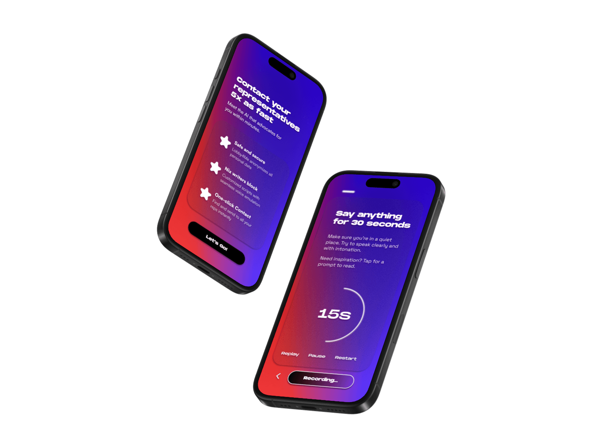

Lobby4Me AI · 2024–25 · Sr. Product Lead
An AI platform that calls Congress for you — designed 0→1, shipped live.
Defined the product vision, experience architecture, and design system for AI-scripted, voice-automated civic outreach — generative AI, text-to-speech, and personalization in one mobile-first flow.
—Full MVP, concept to prototype, in under 8 weeks
—Design-to-dev handoff cut to a repeatable 8-week cycle
—Live product + featured as participatory artwork
